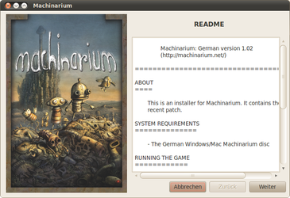
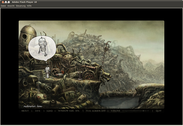
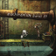

Machinarium
Dieser Artikel wurde für die folgenden Ubuntu-Versionen getestet:
Ubuntu 14.04 Trusty Tahr
Zum Verständnis dieses Artikels sind folgende Seiten hilfreich:
Machinarium  ist ein Adventure aus dem Hause Daedalic Entertainment, welche ebenfalls Edna & Harvey: The Breakout aus der Taufe gehoben haben. Das Spiel wurde komplett mit Adobe Flash realisiert. Handgezeichnete Hintergründe, animierte Details und skurrile Charaktere verleihen dem Spiel Athmosphäre. Abgerundet wird das Point&Click-Adventure durch die Musik von Tomáš Dvořák. Ein Tutorial führt den Spieler in das Geschehen und die Steuerung von Josef ein. Das Spiel kann Online oder auf DVD gekauft werden.
ist ein Adventure aus dem Hause Daedalic Entertainment, welche ebenfalls Edna & Harvey: The Breakout aus der Taufe gehoben haben. Das Spiel wurde komplett mit Adobe Flash realisiert. Handgezeichnete Hintergründe, animierte Details und skurrile Charaktere verleihen dem Spiel Athmosphäre. Abgerundet wird das Point&Click-Adventure durch die Musik von Tomáš Dvořák. Ein Tutorial führt den Spieler in das Geschehen und die Steuerung von Josef ein. Das Spiel kann Online oder auf DVD gekauft werden.
|  |  |
| Installer | Demoversion |
Inhalt der Spiele-Box:
Vollversion von Machinarium,
der Soundtrack des Spiels auf einer Zusatz-CD,
ein Poster vom Spiele-Cover und
das Browserspiel Samorost 2, welches ebenfalls als Vollversion auf der Spiele-CD zu finden ist.
Installation¶
Desura¶
Das Spiel kann über die Internetseite oder den Client zur Spieleliste hinzugefügt und gestartet werden [6].
DVD¶
Die Installationsroutine für die Vollversion von hier 
 herunterladen und ausführbar [1] machen. Anschließend die Installation starten [2]:
herunterladen und ausführbar [1] machen. Anschließend die Installation starten [2]:
./machinarium_1.02-german_x86.mojo.run
Über "Anwendungen -> Spiele -> Machinarium" kann das Spiel gestartet werden.
Humble Indie Bundle #2¶
Die Version aus dem Humble Indie Bundle von der in der E-Mail angegebenen Seite herunterladen, entpacken [3] und in den Ordner Machinarium wechseln. Über
./Machinarium
wird das Spiel aufgerufen [4]. Auf Wunsch einen Menüeintrag [5] vornehmen.
Bedienung¶
Die Spieleoptionen sind am unteren Bildschirmrand zu finden. Hier kann man u.a. vom Vollbild- in den Fenstermodus wechseln. Das Inventar ist über den oberen Rand des Bildschirms erreichbar. Josef wird mit der  Maus gesteuert.
Maus gesteuert.
Hinweis:
Adobe Flash muss installiert sein.
Problemlösungen¶
Hardwarebeschleunigung abschalten¶
Wenn das Spiel ruckelt oder der Mauszeiger unkontrolliert herumeiert, kann man versuchen, die Hardwarebeschleunigug des Flash-Players abzuschalten. Nach dem das Spiel gestartet ist, kann über die rechte Maustaste  der Einstellungsdialog des Flashplayers aufgerufen werden.
der Einstellungsdialog des Flashplayers aufgerufen werden.
Vollbildmodus abschalten¶
Wenn der Mauszeiger oder die Tasten im Spiel nur verzögert reagieren, kann es helfen das Spiel nicht im Vollbild zu spielen. Dazu in die Menüleiste des Spiels (unterhalb des Bildes) gehen, und dort den Vollbildmodus abschalten.
Hinweis:
Die oben genannten Optionen lassen sich nur innerhalb des Spiels ändern. Die Reaktionen und der Bildaufbau lassen bei Anwendung vermuten, daß die entsprechenden Aktionen nicht funktionieren. Mit Etwas Geduld kommt man an die entsprechenden Einstellungen.
Einstellungen und Spielstände sichern¶
Einstellungen und Spielstände von Machinarium werden im Homeverzeichnis im versteckten Ordner ~/.macromedia/Flash_Player abgelegt. Machinarium ist dafür bekannt, dass seine Spielstände insbesondere nach längerer Zeit „verschwinden“ (evtl. durch Updates, Neuinstallation o.ä. des Flash Players). Daher ist es ratsam, von den vorgenannten Dateien regelmäßig Backups zu erstellen:
| Backup | |
| Pfad | Beschreibung |
| ~/.macromedia/Flash_Player/macromedia.com/support/flashplayer/sys/#machinarium.net/settings.sol | Spieleinstellungen |
| ~/.macromedia/Flash_Player/#SharedObjects/DND2ZXYU/machinarium.net/demo/machweb.swf/machinarium.sol | Spielstände - Dabei steht die Zeichenfolge DND2ZXYU für einen zufälligen Wert, der bei jeder Installation anders ist. |
Patch¶
Die Patches für die DVD-Version sind in der aktuellen Installationsroutine von liflg.org bereits enthalten.
Demo¶
Eine Demoversion kann von liflg.org heruntergeladen und wie die Vollversion installiert werden. Außerdem steht ein Online-Demo zur Verfügung.
Deinstallation¶
Um das Spiel wieder zu entfernen muss das Skript uninstall-machinarium.sh im Installationsverzeichnis gestartet [2] werden.
Samorost 2¶
Auf der Spiele-CD ist das Browserspiel Samorost 2 als Vollversion zu finden. Zum Spielstart den Ordner Samorost 2 öffnen und die Datei Samarost2.html mit einem Web-Browser starten.

Infobox¶
| Machinarium | |
| Genre: | Adventure / Puzzle |
| Sprache: | |
| Veröffentlichung: | 2009 |
| Publisher: | Daedalic Entertainment |
| Systemvoraussetzungen: | mind. 1,6 GHz / 1 GB RAM / 350 MB freier Festplattenspeicher / 3D Grafikkarte (1024x768) |
| Medien: | CD (1) / Download |
| Strichcode / EAN / GTIN: | 4009750501146 |
| Läuft mit: | nativ |

- Erstellt mit Inyoka
-
 2004 – 2017 ubuntuusers.de • Einige Rechte vorbehalten
2004 – 2017 ubuntuusers.de • Einige Rechte vorbehalten
Lizenz • Kontakt • Datenschutz • Impressum • Serverstatus -
Serverhousing gespendet von